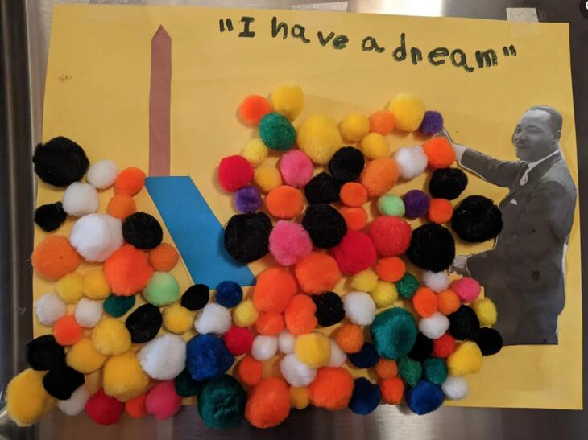
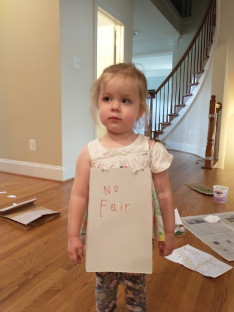
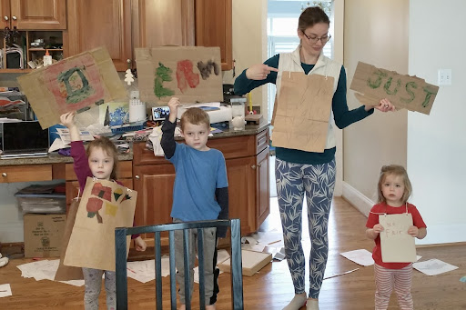
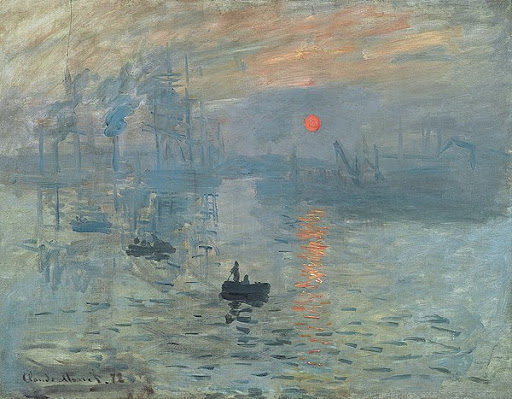

Freedom on the Menu tells the story of one of the seminal events of the Civil Rights movement of the 1960s, as seen through the eyes of a young girl and her family. We are introduced to Martin Luther King, Jr., the man who galvanized the nation with his speeches and non-violent protests. It was Martin Luther King, Jr. who repeatedly reminded America of the claim in our founding document that “All Men Are Created Equal” and asked America when that would be true for black Americans.
While Martin Luther King, Jr. towers over the era of Civil Rights, Freedom on the Menu focuses on the story of ordinary people—an ordinary family—rising up, organizing, marching, boycotting, picketing, protesting, and practicing civil disobedience so that they could participate fully in the American dream. It is a very American story, the story of an oppressed people joining together voluntarily across all walks of life to fight for the American ideal, that “All Men Are Created Equal.”
Finally, it’s worth noting the importance of the family in this story. Families are the fundamental unit of American society. Freedom on the Menu demonstrates the centrality of families for transmitting values from one generation to the next. Connie’s parents, her older brother and sister, even her great-Aunt Gertie all support the Civil Rights movement – and young Connie wants to be part of it, too. The author, Carole Boston Weatherford, shows us a loving family fighting together, but in different ways, to move America closer to her own ideals.

Title: Freedom on the Menu: The Greensboro Sit-Ins
Author: Carole Boston Weatherford
Illustrator: Jerome Lagarrigue
Year Published: 2007
Length: 32 pages
Below is one suggestion for your week with the book Freedom on the Menu. Please experiment with what works for your family! (Note: not all activities may be included in the suggested sample week below).
subj: music
time: 5 minutes
freq: daily
This little light of mine, I’m gonna let it shine Let it shine, let it shine, let it shine Everywhere I go, I’m gonna let it shine Let it shine, let it shine, let it shine
No one knows the exact origin of this song but it goes back at least to the 1930s. Many, many people and groups have recorded a variation of it; the simple lyrics lend themselves to adaptations. The song is a staple in many Christian children’s song books and is believed by many to be inspired by scripture (specifically, Matthew 5: 14-16, see below). The Civil Rights movement of the 1960s adopted it as one of its anthems. You can hear it sung here in a recording preserved by the Smithsonian Institute in a project called The Story of the Civil Rights Movement through its songs. Raffi, the well-known children’s music artist recorded his version here. Even Bruce Springsteen recorded his version.
toc: "Famous Texts: _I Have a Dream_"
time: 5 minutes
freq: daily
I have a dream that one day this nation will rise up and live out the true meaning of its creed: “We hold these truths to be self-evident, that all men are created equal.”
I have a dream that my four little children will one day live in a nation where they will not be judged by the color of their skin but by the content of their character.
Martin Luther King Jr.’s “I Have a Dream” speech galvanized our nation, reminding people of our founding creed — and how black Americans had all too often been excluded from the American dream. The speech was delivered by King on the steps of the Lincoln Memorial on the 100th anniversary of the Emancipation Proclamation to a quarter of a million people lining the National Mall and millions more via television. It vaulted King to the forefront of the national Civil Rights movement and helped lead to the passage of the Civil Rights Act of 1964 which abolished all of the Jim Crow laws that discriminated against black Americans.
To experience the power and the poetry of his speech, your children need to hear Dr. King deliver it. To help them internalize it, ask them to memorize one of the lines above.
subj: geography
time: 15 minutes
supplies: U.S. puzzle
“Connie, the sit-ins have spread all over the South,” said Daddy.
The Greensboro sit-ins spread rapidly. By the end of the month (February) they had jumped from North Carolina to South Carolina, Tennessee, Maryland, Kentucky, Alabama, Virginia, and Florida. By March, they were happening in Texas, Louisiana, Arkansas, and Georgia. After that, people rose up in West Virginia, Ohio, Oklahoma, Mississippi, Illinois, Kansas, and Missouri. All told, scholars estimate 70,000 people, black and white, participated in the sit-ins.
Ask your kids to use a jigsaw puzzle of the United States (or a coloring page) to illustrate how the sit-ins spread. First, assemble the states that joined North Carolina in February. Ask them if they notice anything about this first group of states (they are all very close to North Carolina, where the sit-in movement started).
Next, ask them to add the states where sit-ins started in March. Finally, ask them to add the last batch of states. Ask them if there are any states that stand out in particular in this last group. The law that prevented black Americans from eating at lunch counters with white Americans is an example of a “Jim Crow” law – a law that discriminates against some people based on the color of their skin. Jim Crow laws are usually thought of as a phenomenon of southern states. Are all the states in this last group southern states?
subj: biography
time: 5 minutes
Later that week, our whole family went to hear Dr. King preach at the college chapel. I didn’t really understand all of his speech, but I liked his booming voice. It sounded as if he believed God was on our side.
The Reverend Dr. Martin Luther King, Jr. was the leading figure in the Civil Rights Movement of the 1960s. Like his father and grandfather before him, he was a Baptist minister. He was a master strategist when it came to non-violent protests. He continually called for America to live up to her ideals, pointing us back to our founding document and Thomas Jefferson’s revolutionary phrase that “all men are created equal.”
In October of 1960, just a few months after the Greensboro Four started the sit-ins that swept through the South, Reverend King joined the Atlanta sit-ins at a restaurant inside Rich’s, a rival department store to Woolworth’s. He was arrested and, because of his prominence, was the only one sentenced to hard labor at a maximum-security prison. Pressure from political figures resulted in his release two days later. This was only one of the more than 20 times King was arrested for peacefully protesting.
You can introduce your children to this extraordinary man in this short five-minute YouTube video.
subj: crafts
time: 20 minutes
prep: 10 minutes
“Dr. King’s coming to town,” he told us one morning. “Who’s sick?” I asked. “He’s not that kind of doctor, Connie,” Daddy laughed. “He’s a minister who’s working to make things better for us,” said Daddy.

subj: crafts
time: 15–20 minutes
prep: 10–15 minutes
supplies: paint, paint brushes, Cardboard or cardstock, hole punch, string, craft sticks, glue
“I never get to do anything important.” I pouted. “You can help make the picket signs,” said Sister. “That’s very important.”

subj: science
toc: "Science: Make Your Own Paint"
time: 30–60 minutes
prep: 10–15 minutes
supplies: flour, cold water, salt, food coloring, sauce pan, wooden spoon, several small containers, cardboard or thick paper, fingers or thick paint brushes, paper towels
Hundreds of people walked up and down the sidewalks in front of stores, restaurants, and movie theaters. I saw my own sister carrying a picket sign.
You can make homemade finger paint (for picket signs among other things).
We took the opportunity to discuss what colors to mix to create other colors. After the basic rainbow (red, orange, yellow, green, blue, purple), we also worked on some other colors (black, pink) and how to make the shades darker or lighter.
Our “finger paint” came out pretty thick and a little blobby. It worked out okay, but took a while to dry. My toddler was hands-on into it. My 6-year-old preferred using thick paint brushes. The mixture took the food coloring quite well and the colors were fairly vibrant. See here for more details.
There are many other DIY paint options, here’s another you might try.
subj: re-enactment
time: 30–45 minutes
prep: 10–20 minutes
supplies: signs
“Look over at the lunch counter! We know those boys!” There sat four of Brother’s friends from A&T College. “Do they know they’re in the wrong place?” I whispered. “Some rules have to be broken,” Mama whispered back.
Pick an arbitrary characteristic to discriminate between children or family members. This should be done with some care as we want to demonstrate how unreasonable, ridiculous, and unkind such discrimination is but we do not want to create or foster it. Age is one option (though this isn’t entirely arbitrary as there can be reasons that someone needs to achieve a certain age to participate in some things). Hair type or color and eye color are other options. Whether a certain characteristic will be problematic in your house will vary. We selected eye color as this made for a good division in our family (one adult and the two older children discriminated against).
Based on the characteristic, put up signs and explain rules for where people with the discriminated against characteristic are not allowed to go and what they are not allowed to do. Those discriminated against in our home could not use the bathroom on the main level (the most convenient bathroom during the day) and could not sit at the table for meals (they had to stand at the counter).
We did the discrimination for one day. Over lunch, we picketed (using our homemade picket signs) and sat in (sitting at the table without eating). We did another round of picketing and sitting in at dinner. Some picketers were arrested and spent some time in jail (sitting in a corner in another room). They chanted “jail not bail!”
At the middle/end of dinner, equality was won and all eye colors could enjoy sitting at the table. We celebrated with banana splits (see recipe below) for dessert!
The discrimination definitely stung my older two children. There was interest in (a form of) retaliation - they posted signs on other rooms saying “Kids only.” There were even some tears when one of my children accidentally forgot and used the bathroom sink that was not designated for them. The inconvenience was definitely felt as they had to go longer distances to use a bathroom and wash up.

subj: cooking
time: 15–20 minutes
prep: 15–20 minutes
supplies: ripe bananas, ice cream (vanilla, chocolate and strawberry), chopped nuts (walnuts or peanuts), chocolate (or caramel or butterscotch) sauce, whipped cream, maraschino cherries
It was the best banana split I ever had.
Apprentice pharmacist David Strickler invented the banana split in 1904 while working at a pharmacy in Latrobe, Pennsylvania. The odd shape of this classic American dessert, with a banana sliced lengthways, prompted him to work with a glassmaker who developed a proper container (called a “boat”) for the new-fangled dessert. The original recipe included a banana with three scoops of ice cream (vanilla, chocolate, strawberry) with a variety of different fruits, chopped nuts, and sauces (chocolate, marshmallow) as toppings. Many variations have been developed over the years – it’s very easy to customize the basic recipe!
subj: bible
time: 10 minutes
freq: daily
You are the light of the world. A city on a hill cannot be hidden. Neither do people light a lamp and put it under a bowl. Instead they put it on a stand, and it gives light to everyone in the house. In the same way, let your light shine before men, that they may see your good deeds and praise your Father in heaven. (Matthew 5: 14-16)
Many believe the song This Little Light of Mine has Christian origins that are based on the scripture above, where Matthew quotes Jesus’ Sermon on the Mount. As the origin of the song is unknown, we can’t be certain. However, there is an obvious relationship between the song and the scripture. And this particular scripture is woven into the fabric of American culture, with John Winthrop in 1630 to Presidents John F. Kennedy (1961) and Ronald Reagan (1980) describing America as the “city upon a hill.”
As an alternative memorization exercise, ask your younger children to memorize the first line. Older children can memorize the entire quote. To help them, try acting out the scripture with flashlights in the evening.
subj: family
time: 60 minutes
Just about every week, Mama and I went shopping downtown. I loved having her all to myself for the afternoon.
Connie describes how shopping with her mother was something they did together, just the two of them. Spending time one-on-one with a parent/child can be very impactful (especially if there are other siblings). This can be a one-off special event or a regularly scheduled time (along the lines of Connie’s regular shopping trip). It can be going to a special event or program or be as simple as spending 20 minutes of focused attention with the child (reading, playing a game, etc.). Set up a one-on-one time to get some quality, focused time interacting with each of your children.
subj: reading
toc: "Supplemental Reading: _Granddaddy’s Turn_"
time: 10–15 minutes
freq: twice
When I went to vote for the first time, I remembered what my granddaddy always said: “Patience, son, patience.” He was right. The day finally came. And I knew that – just like my granddaddy – I would never take it for granted.
The very last of the Jim Crow laws were the laws that prevented black Americans from voting. Unlike Freedom on the Menu, the story of Granddaddy’s Turn (authors: Michael S. Bandy & Eric Stein, illustrator: James E. Ransome) doesn’t portray the struggle to overturn these unjust laws. Granddaddy’s Turn shows the emotional impact of being denied a fundamental civil right. It’s also a heartfelt story of the bond between a grandfather and a grandson, illustrating how none of us should ever take our right to vote for granted.
This story is a great supplemental reading to Freedom on the Menu, illustrating another vital way in which the civil rights of black Americans were unlawfully violated. The landmark federal legislation contained in the Voting Rights Act of 1965 marked the beginning of the end of this shameful period of American history.
subj: art
time: 15 minutes
Soon after that, my brother and my sister joined the National Association for the Advancement of Colored People… They let me tag along as they went door-to-door helping people to sign up to vote.
Connie is the youngest child in her family and the story is told from her point of view. Connie is the only one who appears on almost every page. As you read through the story, ask your kids to find Connie and any of her family members in the artwork. Ask them why only Connie’s Brother and Sister joined in the protests and not her Mama and Daddy. Follow up by asking them how old they think Connie is? What do they think an appropriate age would be to participate in a protest?
subj: art
time: 15 minutes
All over town, signs told Mama and me where we could and couldn’t go. Signs on water fountains, swimming pools, movie theaters, even bathrooms.
Impressionism is a style of artistic expression developed in the late 19th century in France. It was a radical departure from the style that prevailed at the time; early critics described the paintings as poorly defined sketches. Impressionists were excluded from major art shows and were forced to start their own to get their work exhibited to the public.
Impressionists do not try to paint a scene realistically. They try to capture their “impression” of the scene – the mood, the feeling it evokes. Or, as one commentator expressed it, “they render not the landscape but the sensation produced by the landscape.” Forms are not clearly delineated but are “shimmering and vibrating” with color providing definition rather than black lines.
Jerome Lagarrigue, the illustrator for Freedom on the Menu, paints in an impressionistic style. One reviewer described his art as “somber, somewhat impressionistic paintings [that] capture the dignity and gravity of the situation.” Ask your young art critics: how would they describe the mood of Lagarrigue’s paintings?

Impression, Sunrise by Claude Monet (1872)
(This painting, panned by an art critic, gave Impressionism its name.)

Woman with a Parasol by Claude Monet (1875)
(Claude Monet was one of the most famous of the Impressionists)
subj: vocabulary
time: 10 minutes
“The protests are growing!” I told Daddy. “I’m joining the sit-ins,” Brother said, bursting into the room. “And I’m going to picket downtown,” said Sister. “Tomorrow.”
The story of the Greensboro sit-ins introduces the vocabulary of civil disobedience: protests, sit-ins, pickets, arrest, bail. Most of these words will be new to your kids and you may need to spend a bit more time explaining these words upfront. For example, “sit-ins” is in the title with no context as to what it means. Some of these words are at the heart of the story, so understanding them will be important.